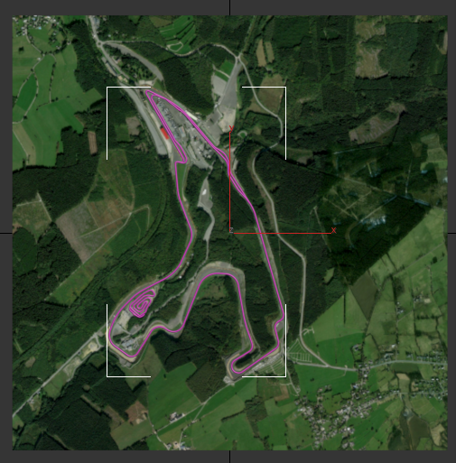
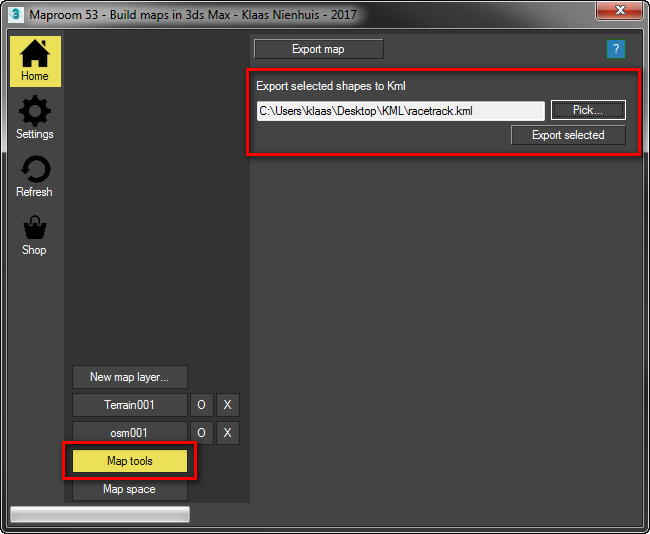
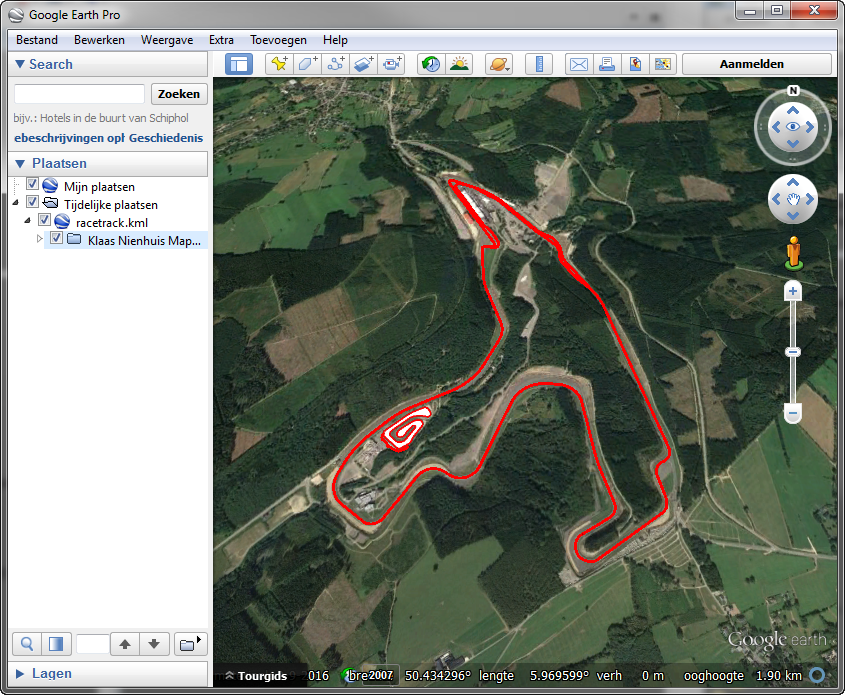
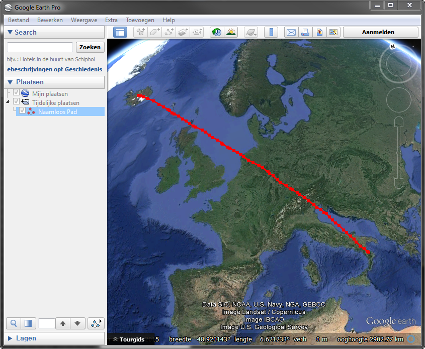
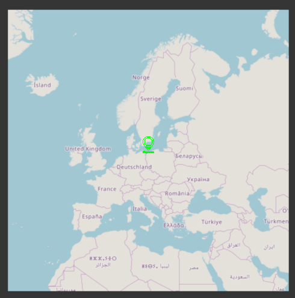
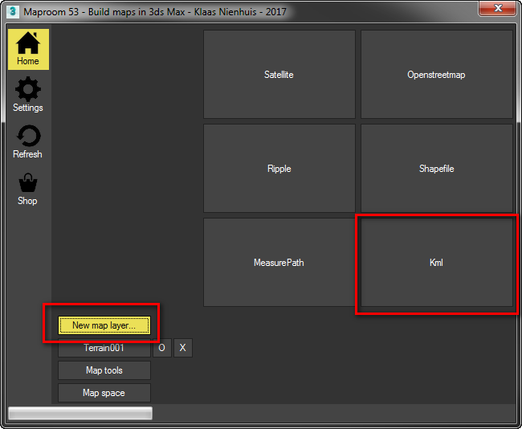
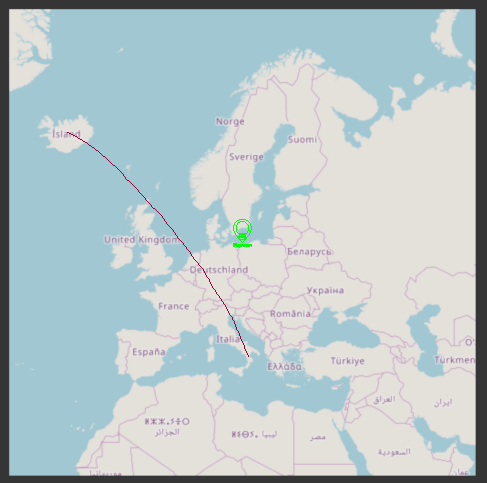
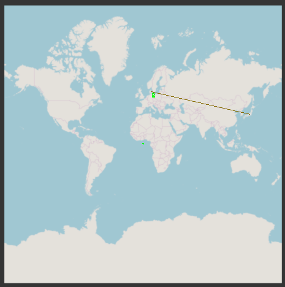
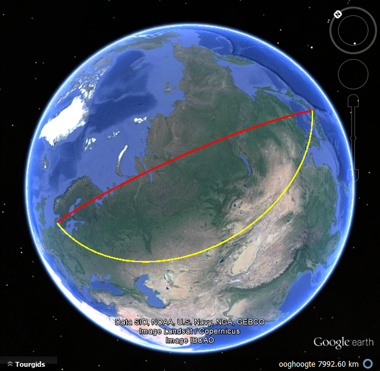
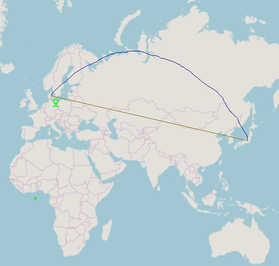

KML¶
KML is a fileformat used by Google Earth. When you draw paths and polygons in Google Earth you can save them as KML files. Maproom is able to read and write KML files. Though there are limitations, only closed and open shapes are supported at the moment.
Exporting KML with Maproom¶
First you need a map. Make one with Maproom. I’ve made a map of the Spa race circuit at Francorchamps. I’ve then imported the racetrack from openstreetmap. However, you can also draw your own shapes. They don’t need to be connected or linked to the map. Once the shapes are in place, select them and go to the Map tools of your map. Press the Pick... button to specify where you want to save the kml file. Finally press the Export selected button to export the selected shapes to kml. Make sure your shapes have enough points. If you export a circle, you’ll get a shape with 4 points in Google Earth. Always subdivide!
You now can drag this kml file into Google Earth and the shapes should pop up in the right place.
Keep in mind that closed shapes in 3dsMax will be seen as polygons in Google Earth, they’re filled. You can change this by adjusting the style of the shapes in Google Earth.
My racetrack selected in 3dsMax
First select the map tools, then export the selected shapes
The race track in Google Earth
Importing KML with Maproom¶
Let’s draw something in Google Earth and import it into 3dsMax. When doing this, make sure the paths and polygons in Google Earth have enough points on them. Otherwise Maproom wo’nt be able to properly project the shapes onto the map.
First draw a path in Google Earth. When you drag your mouse while keeping the left mouse button pressed lots of points are created. I’ve drawn a flight path from Iceland to Italy. Then save the path as a KML file. Don’t use KMZ, that doesn’t work in maproom yet. In maproom you can use the KML map preset, but I like to start with a satellite image of roughtly the area I’ve drawn. Then add a new KML map layer, pick the file and press Place KML. The KML data is then projected onto your map.
A straight line with lots of points
A map in 3dsMax of roughly the same area
Add a KML layer to the map
The line projected onto the map
Projection¶
Since the maps in Maproom are flat and Google Earth is presented as a globe, KML files show the effects of map projections very nicely. Just try the following:
Make a world map in Maproom with the default map projection (Mercator)
Draw a straight line from Denmark to Japan and subdivide the line
Export the line to KML and import it in Google Earth
Then draw a straight line in Google Earth between Denmark and Japan
Compare the lengths
In my case the straight line on the globe was about 8.640 km and the straight line on the map 10.000 km
The straight line between Denmark and Japan
The yellow line came from the flat map, the red line is a straight line between the same destinations on the globe
The line from Google Earth projected back onto the flat map. That line (the blue one) is the shortest path when flying!